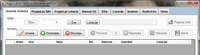
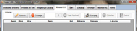
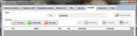
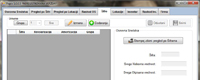
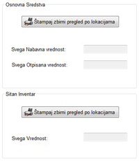

Popis - aktuelna verzija 1.0.0.6.




Popis osnovnih sredstava i sitnog inventara
- Unos, izmena (izmena, rashodovanje, premeštanje) i brisanje osnovnih sredstava.
- Pregled osnovnih sredstava po šiframa i lokacijama.
- Štampanje popisne liste osnovnih sredstava. Štapmanje lista osnovnih sredstava po šiframa i lokacijama.
- Pregled, izmena i brisanje rashodovanih osnovnih sredstava i vraćanje iz rashoda. Štampanje liste rashodovanih sredstava.
- Dodavanje, pregled i izmena šifara (revalorizacija, amortizacija, grupa). Štampanje zbirnog pregleda po šiframa.
- Dodavanje, pregled i izmena lokacija. Štampanje zbirnog pregleda po lokacija za osnovna sredstva i sitan inventar.
- Unos, izmena (izmena, rashodovanje) i brisanje inventara.
- Pregled inventara po lokacijama. Štampanje popisne liste inventara.
- Pregled, izmena i brisanje rashodovanog inventara i vraćanje iz rashoda. Štampanje liste rashodovanog inventara.
- Upisivanje i izmena podataka o firmi.
Change log
Verzija 1.0.0.6
- Dorađena obrada izuzetaka.
Verzija 1.0.0.5
- Ispravljene greške u štampanju zbirova na štampanim izveštajima.
- Ispravljena greška u prikazu zbirova u pregledu po lokaciji.
- Dodate sličice na komandnim dugmadima.
- Dorađen prenos revalorizacije i amortizacije.
Verzija 1.0.0.4
- Omogućen izbor Šifri po Grupama, za pregled i štampanje.
Verzija 1.0.0.3
- U bazi dodata tabela Grupe (Grupa: Number - Integer) (Opis: Text - 50).
Verzija 1.0.0.2
- Dodata opcija za premeštanje osnovnih sredstava.
- Ispravljene greške u snimanju dodatih stavki.
Verzija 1.0.0.1
- Dodata kolona Jm. u štampanom izveštaju rashoda inventara.
- Optimizacija koda.
- U bazi isključen referencijalni integritet u svim relacijama.